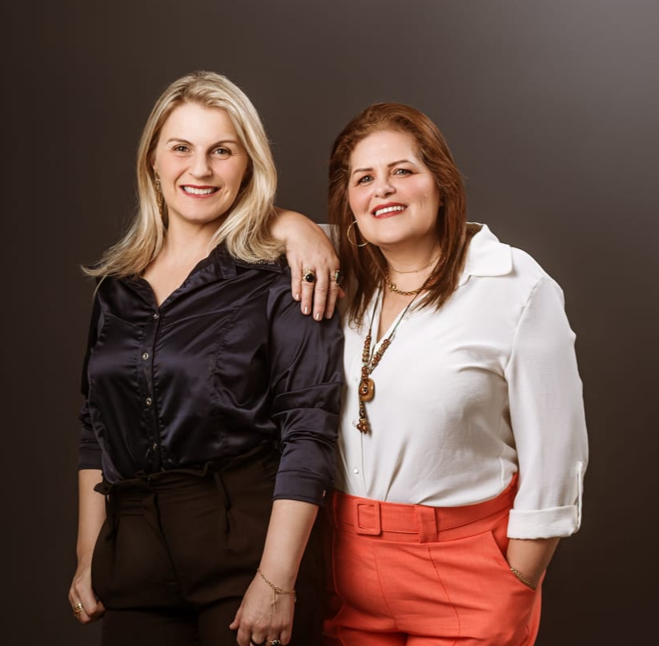

Por que você sente que precisa resolver tudo
Entenda o que pode ter feito você aprender que precisava ser forte e dar conta.
WORKSHOP ONLINE E AO VIVO
Um workshop ao vivo para mulheres que estão cansadas de sustentar tudo sozinhas e querem compreender o que pode estar por trás dessa necessidade de dar conta de tudo.
1º LOTER$ 29,90

01 IDENTIFICAÇÃO
Talvez não seja apenas excesso de tarefas.
Pode existir algo por trás dessa necessidade de dar conta de tudo.02 UM NOVO OLHAR
Compreender o padrão é o começo de um movimento mais consciente — sem exigir que você mude tudo de uma vez.
Entenda o que pode ter feito você aprender que precisava ser forte e dar conta.
Perceba por que você consegue cuidar de todos, mas tem dificuldade de permitir que cuidem de você.
Compreenda o que pode estar por trás da dificuldade de colocar limites e considerar também as suas necessidades.
Experimente um olhar além do racional para perceber esses padrões e abrir espaço para novos movimentos.
03 PARA QUEM É
Se reconheceu nessa mulher que tenta dar conta de tudo, está cansada de repetir esse padrão e quer compreender o que pode existir por trás dele.
Você participa das práticas e vivências no seu ritmo e respeitando seus limites.
04 1º LOTE ABERTO
VOCÊ TERÁ:
05 QUEM CONDUZ
Professoras e Terapeutas Sistêmicas Integrativas
Duas profissionais que unem a experiência da educação ao olhar terapêutico e sistêmico para compreender padrões, relações e movimentos que atravessam a vida das mulheres.
Além da formação e experiência profissional, Lisandra e Salete também conhecem, em suas próprias histórias, o que significa assumir responsabilidades, atravessar desafios e perceber a importância de olhar para si.
Hoje, integram visão sistêmica, constelação, hipnose, PNL, neurociência e práticas integrativas em uma condução acolhedora, respeitosa e voltada à ampliação da consciência.
No workshop Diagnóstico da Mulher que Dá Conta de Tudo, conduzirão práticas e vivências sistêmicas para ajudar você a perceber o que pode estar por trás da necessidade de sustentar, resolver e dar conta de tudo.
06 ENTREGAS
Um encontro para olhar para os padrões que sustentam o “dar conta de tudo”.
Para identificar onde esse padrão aparece na sua vida.
Para ampliar a percepção sobre padrões, relações e movimentos que podem estar por trás da sobrecarga.
Orientações, lembretes e suporte durante o workshop.
Para rever o conteúdo com calma.
07 FAQ
Reunimos aqui as respostas mais importantes antes de você garantir sua vaga.
Não. Você poderá participar das práticas e vivências respeitando seus próprios limites.
Não. É um workshop de autoconhecimento com práticas e vivências guiadas.
É possível ampliar a percepção, compreender padrões e vivenciar novos movimentos. Cada pessoa terá sua própria experiência.
A proposta é oferecer um olhar diferente, incluindo uma perspectiva sistêmica sobre padrões que podem aparecer na sua vida.
Sim. As práticas e vivências serão conduzidas passo a passo.
08 SUA ESCOLHA
Talvez você não precise fazer mais.
Talvez precise compreender por que sente que precisa dar conta de tudo.